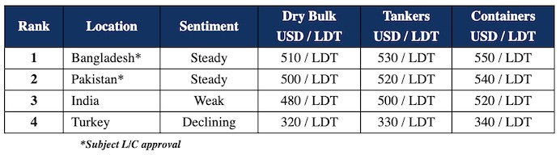

inWeekly Demolition Reports26/03/2024

Despite the occasional small(er) LDT candidate popping up for sale over recent weeks, there regrettably remains the ongoing scarcityof tonnage that is simply unable to fill the most basic of demands at the major ship-recycling destinations. As plots across Indian sub-continent markets gradually recycle through their respective shares of vessel deliveries through the first quarter of 2024, both Bangladeshi and Pakistani markets remain well-positioned despite the onset of the traditionally quieter month of Ramadan, while India continues to dither (seemingly) uncaringly in silence, with a whole lot of holidays lined-up next month.
Like Turkey, India has endured an exceptionally rough year, with volatile steel plate prices of its own, a currency that’s weakening sharply again, an upcoming election that is looming large over the nation’s horizon, and the lingering hope that if the Modi government does win another term, the raft of infrastructure projects previously proposed by this administration could finally come to fruition and potentially boost local steel prices, helping the country’s beleaguered ship recycling sector in turn. Additionally, despite the implementation of punitive taxes & duties to prevent serious undercutting of domestic steel, the issue of cheap Chinese billets has reared its head once again as China starts to flood the markets (including India) with large amounts of cheap steel, similar to what the industry witnessed back in 2015 & was labeled as the second ship recycling recession (after the global crash of 2008) when vessel prices essentially halved for this very reason.
In an alternate light, the mere trickle of ships has also helped global ship recycling markets remain relatively well-positioned through these tumultuous times, as the rare unit that does get proposed into the markets, is often subject to serious Cash Buyer competition resulting in Ship Owners getting the best bang for their buck no matter what the prevailing market conditions are at the time, and everyone is making money at the time of the MOA, EXCEPT for the Cash Buyer, who is still forecasting where the market will be 30 days later / closer to the time of physical delivery, hoping to make do with even just USD 1/Ton on the books – gotta love this industry’s tenacity.
Overall, dry bulk rates continue to enjoy this unexpected & unseasonal boom since the start of the year, and many have been left asking just how sustainable this really can be in the long run, before freight rates rapidly normalize and we see recycling volumes promptly pick up thereafter, causing recycling levels to drop in kind. Even the relatively lower placed container sector – despite seeing a few more vessels sold this year – has yet to really fire up (in terms of recycling volumes).
For week 12 of 2024, GMS demo rankings / pricing for the week are as below.

📄 Download PDF: Ship-recycling-market-insight-week-12-2024-Eking-Out-Uncaring-About.pdfSource: GMS,Inc. ,https://www.gmsinc.net/gms_new/index.php/web